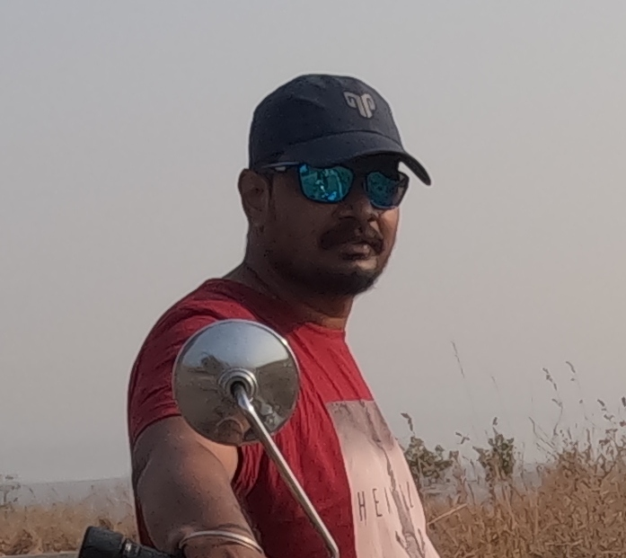

Nanda Kumar V

Objective :
Strong communication and interpersonal skills. Strong leadership skills
with an ability to motivate teams in achieving targets and goals.
Education :
M.C.A ( Master of Computer Applications )
Work Experience:
Worked as Data Ananlyst at Cross Domain Network ( Gallegar Service Pvt. Ltd ).
From Oct 2013 - Nov 2015
- It was Customer service Company Supporting to U.S client From INDIA
- Was working for IT service
Working as a District IT Consultant for Revenue Dept, KARNATAKA State Government
From Dec 2015 - Till Date
- Working in a Goverment Sector as we are recruited by a Private compay where we support Revenue Dept State government Project called as "BHOOMI".
- we work at Client location, as KARNATAKA state has 32 District each district as 1 District IT Consultant supporting Client at there district
- Our Reporting officer is Deputy Commisioner ( D.C) and we work for D.C Office TUMKUR District
- We support Many Software's Developed by Revenue Dept we identify Error's in Softwareand report it to State Team called B.M.C
Work Expierence:
- Able to get along with fellow workers
- Confidence, Accurate, Creative
- Positive Thinking
- Good Team Work
- Dedicate towards work
Awards and Certifications:
- Recieved Many Award for Best performance from DC & DistrictLevel Ministers.
Others: